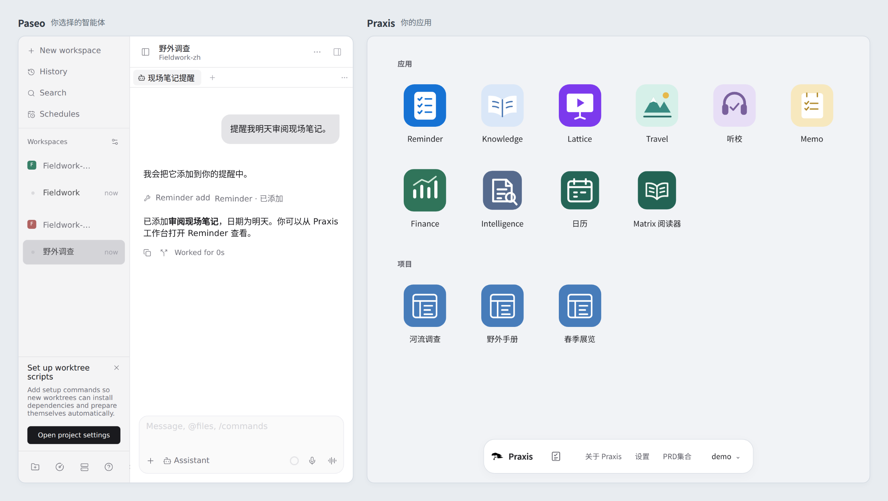

为你的 AI 智能体，
准备一个自己的工作台。
说出想要的结果，选择允许访问的内容，再到应用里查看和使用结果。日常步骤交给智能体，把注意力留给需要你判断的事情。
一个人、家人之间，或一个团队与组织，都可以使用。

提出需求，授权，查看结果。
说出想要的结果
继续使用你喜欢的智能体。从一件具体的事开始。
选择允许的访问范围
登录并授权具体应用、记录和操作，之后也可以撤销。
按自己的节奏使用结果
打开应用，读、看、听，或在需要时回到依据核验。
现成的应用，也给你的应用留了位置。
十四个内置组件，各自保存记录、提供界面。从需要的开始，也可以围绕自己的工作开发新应用。
自己的工作，自己掌握。
智能体，由你选择。
Praxis 通过获授权工具连接外部智能体。继续使用你喜欢的客户端和模型，并核实它支持相应连接。
数据与授权，由你掌握。
可以自行部署，查看或撤销应用访问。阅读卡片不会替你接受工作，也不会给同事发已读回执。
操作线索，可以回看。
查看获授权的 MCP 调用元数据及 Polaris 已记录的运行观察。更完整的业务流程改进仍属于产品方向。
Connect to Praxis at https://polaris.jianxiaoyitech.com/mcp using OAuth. Help me sign in and choose what you may access, then show my available apps and tools.
在线服务需要已有 Praxis 账号，开放自助注册仍在计划中。
然后说：“提醒我明天复核现场笔记。”
git clone --recurse-submodules \
https://github.com/55aaseclab/praxis.git
cd praxis
docker compose up --build -d --wait读取首次生成的管理员账号：
docker compose exec core node \
scripts/builtin-install.mjs credentials然后打开 http://127.0.0.1:4321/，让智能体连接你的本地实例。
你可能还想知道。
Praxis 会替换我正在用的智能体吗？
不会。外部智能体理解任务并调用获授权的应用工具；Praxis 保存应用记录、校验操作，并把结果呈现给人。
能和其他人一起用吗？
可以个人、家庭、团队或组织使用，按应用、资源和动作控制权限。加入一个组织不等于自动共享私人记录。
能开发和部署自己的应用吗？
可以。按照应用标准登记独立应用；受管部署还需要审核过的集成和明确的安装配置。
能查看智能体做过哪些操作吗？
设置中的 Trace 展示实际 MCP 调用及补充的运行观察。覆盖完整业务过程的分析与流程改进仍属于产品目标。